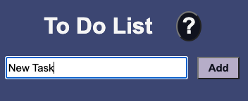
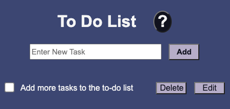
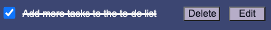
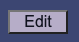
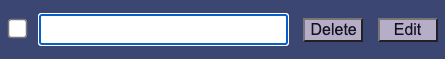
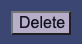

1. Click on the text box and type in a new task.
2. Click on "Add" button.
3. The new task will appear below the text box.
1. Click on the check-box next to the task you have completed.
2. A check mark will appear in the box and the task will be crossed-off in the list.
Note: Clicking on the checkbox again will remove the cross-off line.
Note: Crossed-off tasks can be deleted from the list.
1. Click "Edit" button next to the task you would like to edit.
2. Type in edited task in the input box that appears.
3. Double click input box to finalize edit.
1. Click "Delete" button next to the task you would like to delete
